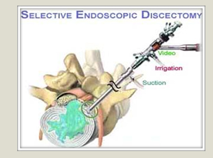
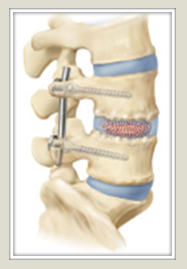
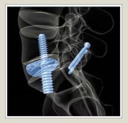

Cervical Spine Injuries in Sport
— C. Chambliss Harrod, MD
Head and neck injuries account for 70% deaths from trauma and 20% of cases of permanent disability in athletes with 750,000 Americans per year suffering from injuries related to recreational activities sports—11% of those being head injuries. Over 300,000 concussions annually occur in the U.S. in organized sports. Approximately 10,000 cases of spinal cord injury (SCI) occur annually in the U.S., and sporting events are the 4th most frequent cause. Sports associated with neurological injury typically include trampoline, football, water sports, gymnastics, rugby, ice hockey, wrestling, horseback riding, and diving.
The classic mechanism of injury is referred to as an axial compression injury. In 209 football-related injuries reported between 1971 and 1975, where 52% of the patients who suffered from permanent quadriplegia, the injury was attributed to axial loading. When the head is lowered, normal buffering capacity of lordotic cervical spine disappears, resulting in decreased ability of the cervical spine to absorb and dissipate energy (Figure 1). The primary cause of injury is typically poor technique with spearing allowing a flexed neck to become a "segmented column" (Figure 2). It negates the potential for buckling. Prevention is linked to education including teaching kids to "See What You Hit." A review of football injury registry shows that the historic introduction of helmets led to a 66% decrease in intracranial hemorrhage but a 204% increase in cervical spine fractures and dislocation with a 116% increase in quadriplegia. A new "weapon" had been introduced, and in 1976 spear tackling was made illegal.

Cervical sport injuries include sprains/strains, stingers/burners, transient quadriplegia, fractures, dislocations, and spinal cord injury. Sprains are ligamentous injuries usually due to direct collision and typically present with pain localized to the neck without radiation into arms and decreased cervical motion. Management includes cervical immobilization, radiographic evaluation, and rehabilitation if necessary with return to play when pain free, normal range of motion and full strength.
Burners or stingers ("dead arm") are transient cervical nerve root symptoms due to root compression in nerve tunnels in the neck (foramen) or stretch of the plexus (group of nerves) typically with opposite deviation of the head and depression of shoulder (Figure 3). These are very common and have a clear predisposition for a stinger making the next more likely. Management includes removal from activity with the patient returning to play when there is complete resolution of symptoms. Often a MRI is performed to rule out a disk herniation or structural problem or a CT scan to rule out an occult fracture.
Transient quadriplegia (TQ) is probably a variant of a spinal cord injury (central cord syndrome) and relates to spinal stenosis (or narrowing of the cervical canal). When the canal depth (space available for the cord) that precludes or obliterates the protective cushion of spinal fluid or causes deformation of the cord in any position) is less than 80% of the vertebral body depth, there is a 3x increased risk for stingers and 93% increase in rates of TQ (Meyer, American Journal of Sports Medicine, 1994). TQ can vary in symptoms from true neurological deficit to burning hands and usually complete recovery occurs in 10-15 minutes, but may take up to 48 hours. Patients with small spinal canals need to be counseled regarding possibility of serious injury and consider avoiding high impact sports.
Fractures and dislocations include a full range of cervical injuries that can be challenging to determine on the field. Immobilization and transport to a full trauma hospital is appropriate and when in doubt, leave the helmet AND pads on when in the field. Return to play criteria vary but absolute contraindications to play include: cervical myelopathy, cord abnormality on MRI (Figure 4), ligamentous laxity, congenital neck deformities, Arnold-Chiari malformation (brainstem migration), stiff spine disorders (ankylosing spondylitis, DISH, rheumatoid arthritis, patients with a neurological deficit, symptomatic disk herniation, more than two previous episodes of transient quadriplegia, history of some prior cervical surgery (cervical laminectomy, h/o C1-2 fusion, >2 level ACDF). Relative contraindications must emphasize that the patient and family understand possibility of recurrent injury. Relative contraindications include a history of TQ with full return baseline strength, rang of motion, mild-mod stenosis on imaging, more than three stingers in same season, stable healed two-level anterior or posterior fusion. The following patients are ok to play: single level anterior or posterior fusion, and a history of two stingers in same or multiple seasons. (Vaccaro, The Spine Journal 2002, Orthopaedics 2001).
In summary, cervical strains are common. More significant injuries are less common but significant potential sequelae. Safety measures have been proposed with some definition of return to play criteria but consensus is still lacking.
|
My Balance is off- Could it be my Neck?
— Christian Jacomine, MPAS, PA-C
Patients experiencing disturbances in their balance could attribute their problem to several causes. These can include inner ear dysfunction, medication side effects and many other causes including neurological disorders. Many patients may not realize that it could be caused by problems associated with their neck. Patients may come to their doctor with neck or arm pain and/or weakness or numbness. There are even times when patients have both neck and lower back problems with leg pain, numbness or weakness. Sometimes patients often present with only low back and leg complaints. They assume the balance problems are directly related to problems in their lower back or legs and never consider it could stem from their cervical spine. It is routinely found that the balance disorder is secondary to cervical stenosis, or narrowing of the space around the spinal cord in the neck. To understand how balance can be affected by changes in your neck, one must understand the basic anatomy of the neck or cervical portion of the spine.
Patients experiencing disturbances in their balance could attribute their problem to several causes. These can include inner ear dysfunction, medication side effects and many other causes including neurological disorders. Many patients may not realize that it could be caused by problems associated with their neck. Patients may come to their doctor with neck or arm pain and/or weakness or numbness. There are even times when patients have both neck and lower back problems with leg pain, numbness or weakness. Sometimes patients often present with only low back and leg complaints. They assume the balance problems are directly related to problems in their lower back or legs and never consider it could stem from their cervical spine. It is routinely found that the balance disorder is secondary to cervical stenosis, or narrowing of the space around the spinal cord in the neck. To understand how balance can be affected by changes in your neck, one must understand the basic anatomy of the neck or cervical portion of the spine.
First, the cervical spine is made up of seven cervical bones, each of which vary in shape and size. These bones are stacked upon one another forming the cervical vertebral column. Each bone is labeled C1 through C7. C1 is in the shape of a ring and is also known as the atlas. C2 is known and the axis and is specially shaped to allow C1 to sit on top of it. C3 through C7 have similar shapes. Most of the cervical bones can be divided into parts. The portion closest to the front of the neck is the vertebral body. Behind the vertebral body lies the spinal cord, which has tracts of nerves that control function and sensation throughout the human body. The spinal cord is surrounded and protected by pieces of the vertebral bones. The portions closest to the back of your neck are the spinous processes. Above and below the vertebral bodies are discs, with the exception of the space between the first two cervical bones. Nerves exit the spinal column through natural holes made up by the interacting cervical bones called foramen. These nerves go to various muscles and tissues in the upper body. There are also several ligaments, or thick bands of connective tissue, that run up and down the bony portions of the spine in front of and behind the spinal cord. If any of these portions become displaced or overgrown, the space around the spinal cord can become narrowed with pressure placed on the spinal cord. Pressure on the spinal cord can cause neurologic dysfunction. One of the symptoms can be balance disorder.
Narrowing around the spinal cord in the neck, as previously mentioned, is known cervical stenosis. The spinal cord contains nerve tracts that regulate various functions of the body. If the spinal cord is compressed, a patient may develop cervical myelopathy. "Cervical myelopathy is diagnosed on the basis of the patient’s history, physical examination, and imaging findings" (Kalantar and Yoon, 2012, p. 51). Balance dysfunction is just one of the many symptoms of cervical myelopathy. Other symptoms manifest in both the upper and lower extremities. Weakness, pain, hand numbness and clumsiness are symptoms of the upper extremity; while loss of balance, tendency to fall and gait disturbances are lower extremity symptoms. A patient may experience all, some, or none of the symptoms described above. Variation can be dependent on the severity and location of cord compression (Kanlantar & Yoon, 2012).
In summary, changes in the neck or cervical spine can contribute to disturbances in your balance. The way this happens is through narrowing of the spinal canal leading to compression of the spinal cord. The resulting dysfunction is known as cervical myelopathy and includes changes in both upper and lower extremities that can result in changes in balance. Although a thorough history and physical examination will be performed by a spine specialist, it is very important that you mention any disturbances in balance or clumsiness of the upper extremities. Although pain or weakness in the low back and legs may be a patient’s chief complaint, a condition such as stenosis of the cervical spine should not go untreated. Some of these changes may prove irreversible (Kanlantar & Yoon, 2012).
Sources:
1. Counihan, T. J. (2010). Headache, neck pain, and other painful disorders. In Andreoli, T. E., Benjamin, I. J., Griggs, R. C., & Wing, E. J. (Eds.), Andreoli and Carpenter's Cecil Essentials of Medicine (8th edition, pp. 1086 -1095). Philadelphia, PA: Saunders Elsevier.
2. Kalantar, S. B. & Yoon, S. T. (2012). The Pathophysiology of Cervical Spondylotic Myelopathy. In Rao, R. D. & Smuck, M. (Eds.), Orthopedic Knowledge Update Spine (4th edition, pp.43-49). Rosemont, IL: American Academy of Orthopaedic Surgeons.
|
|
|
| |